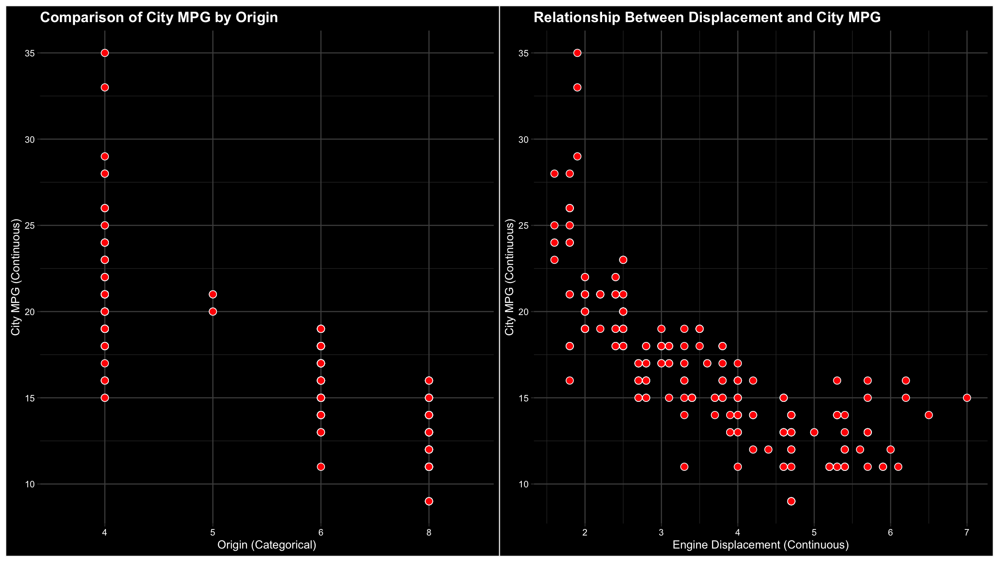
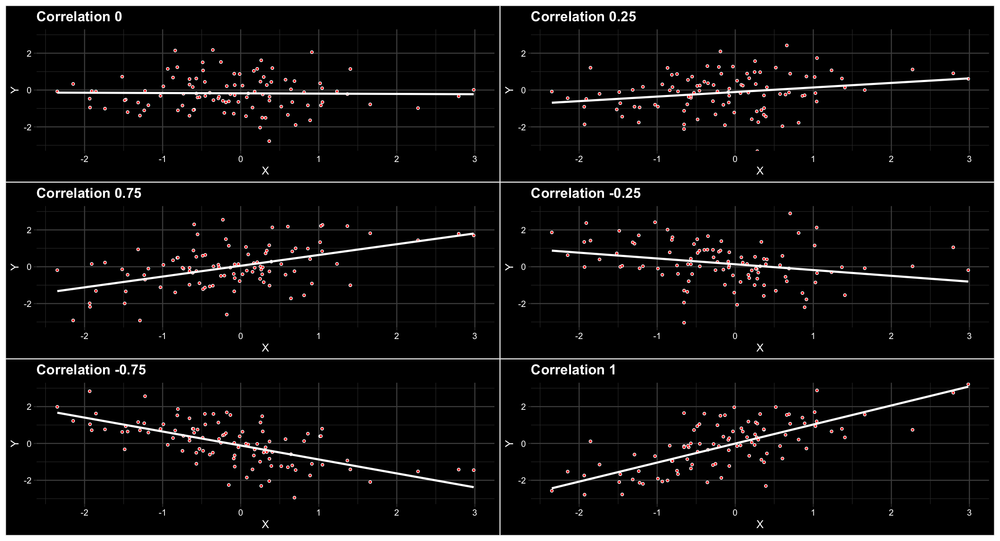
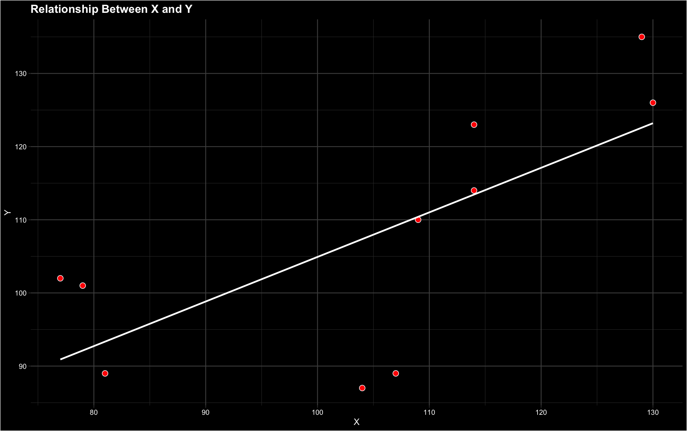
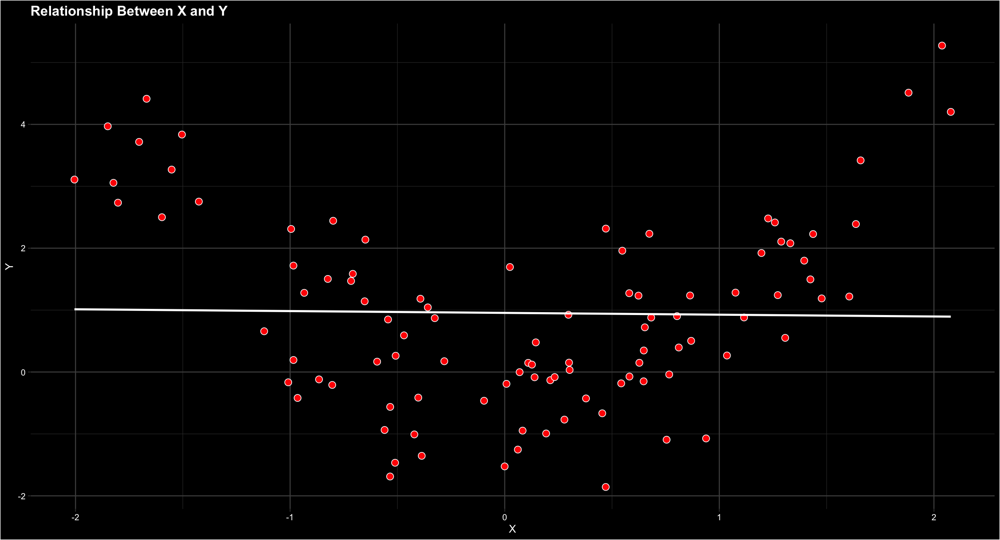
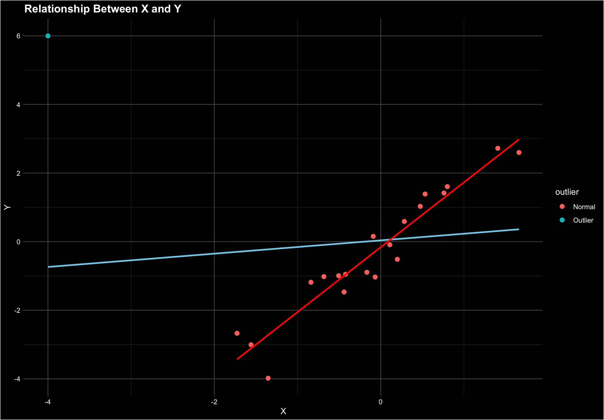

Anova vs Regression
ANOVA (Analysis of Variance) and regression are both statistical methods for analyzing relationships between variables. ANOVA compares means across multiple groups to identify differences, while regression extends this by modeling the relationship between a dependent variable and one or more independent variables, often with the goal of providing predictions. Regression can be seen as a generalization of ANOVA, as it not only tests group differences (as ANOVA does) but also quantifies and predicts how variables influence each other.
General Linear Model Equations Explained
\[Y = \beta_0 + \beta_1X_1 + \beta_2X_2 + \epsilon\]
Explanation: In ANOVA, the GLM equation models the relationship between a dependent variable (\(Y\)) and categorical independent variables (\(X_1, X_2, \dots\)) that represent group membership. The coefficients (\(\beta_1, \beta_2, \dots\)) estimate the effects of these groups, while \(\beta_0\) is the overall mean, and \(\epsilon\) represents random error.
Explanation: In regression, the GLM equation extends to include continuous and/or categorical independent variables (\(X_1, X_2, \dots\)) to explain or predict the dependent variable (\(Y\)). The coefficients (\(\beta_1, \beta_2, \dots\)) quantify the effect of each independent variable, with \(\beta_0\) as the intercept and \(\epsilon\) as the residual error.
| Aspect |
ANOVA |
Regression |
| Focus |
Compares means across groups |
Models relationships between variables |
| Independent Variables |
Categorical (e.g., groups or factors) |
Continuous or categorical |
| Goal |
Test if group means differ |
Quantify effects and make predictions |
| Output |
F-statistic and p-value for group differences |
Regression coefficients (\(\beta\)) and R² |
Correlation
Back to Basics: Understanding Correlation
ANOVA is a powerful tool for analyzing differences between groups, where the independent variables are categorical. But what happens when we are interested in the relationship between two continuous variables? In such cases, ANOVA isn't suitable, and we need an alternative.

For simple relationships between two continuous variables, we can use correlation. Correlation measures the strength and direction of the linear relationship between two variables, providing a straightforward way to understand how they are connected.
| Aspect |
ANOVA |
Correlation |
| Type of Variables |
Categorical (e.g., groups or factors) |
Continuous |
| Focus |
Compares group means |
Measures the strength and direction of relationships |
| Output |
F-statistic and p-value |
Correlation coefficient (\(r\)) |
| Equation |
\(Y = \beta_0 + \beta_1X + \epsilon\) |
\(r = \frac{\text{Cov}(X, Y)}{\sigma_X \sigma_Y}\) |
| Example |
Does test performance differ by group (e.g., gender)? |
Is there a relationship between hours studied and test scores? |
What is a correlation?
Definition: Correlation measures the strength and direction of the linear relationship between two continuous variables. The correlation coefficient (\(r\)) ranges from:
- \(+1\): Perfect positive linear relationship
- \(-1\): Perfect negative linear relationship
- \(0\): No linear relationship

Math behind the magic
- Calculate the means of \(X\) and \(Y\):
- \(\bar{X} = \frac{\sum X_i}{n}\): This gives us the average value of \(X\).
- \(\bar{Y} = \frac{\sum Y_i}{n}\): This gives us the average value of \(Y\).
- Subtract the means:
- \(X_i - \bar{X}\): Find how far each value of \(X\) is from the average.
- \(Y_i - \bar{Y}\): Find how far each value of \(Y\) is from the average.
- Multiply deviations:
- \((X_i - \bar{X})(Y_i - \bar{Y})\): Multiply the deviations to see how \(X\) and \(Y\) vary together.
- Square deviations:
- \((X_i - \bar{X})^2\): Find how much \(X\) values vary on their own.
- \((Y_i - \bar{Y})^2\): Find how much \(Y\) values vary on their own.
- Sum results:
- \(\sum (X_i - \bar{X})(Y_i - \bar{Y})\): Add up how much \(X\) and \(Y\) vary together.
- \(\sum (X_i - \bar{X})^2\): Add up how much \(X\) varies on its own.
- \(\sum (Y_i - \bar{Y})^2\): Add up how much \(Y\) varies on its own.
- Divide by the product of standard deviations:
- \(r = \frac{\sum (X_i - \bar{X})(Y_i - \bar{Y})}{\sqrt{\sum (X_i - \bar{X})^2 \sum (Y_i - \bar{Y})^2}}\): Combine everything to calculate the correlation coefficient, which tells us the strength and direction of the relationship.
Test Example
Let's say we have two variables, \(X\) and \(Y\), with the following values:
Example: Calculating Correlation for Given Data
We have the following data for \(X\) and \(Y\):
| Index |
\(X\) |
\(Y\) |
| 1 |
114 |
114 |
| 2 |
79 |
101 |
| 3 |
129 |
135 |
| 4 |
109 |
110 |
| 5 |
107 |
89 |
| 6 |
114 |
123 |
| 7 |
104 |
87 |
| 8 |
77 |
102 |
| 9 |
130 |
126 |
| 10 |
81 |
89 |
Step-by-Step Calculation
- Calculate the means of \(X\) and \(Y\):
- \(\bar{X} = \frac{114 + 79 + 129 + 109 + 107 + 114 + 104 + 77 + 130 + 81}{10} = 104.4\)
- \(\bar{Y} = \frac{114 + 101 + 135 + 110 + 89 + 123 + 87 + 102 + 126 + 89}{10} = 110.6\)
- Subtract the means:
- \(X - \bar{X} = [9.6, -25.4, 24.6, 4.6, 2.6, 9.6, -0.4, -27.4, 25.6, -23.4]\)
- \(Y - \bar{Y} = [3.4, -9.6, 24.4, -0.6, -21.6, 12.4, -23.6, -8.6, 15.4, -21.6]\)
- Multiply deviations:
- \((X - \bar{X})(Y - \bar{Y}) = [32.64, 243.84, 600.24, -2.76, -56.16, 119.04, 9.44, 235.64, 394.24, 504.24]\)
- Square deviations:
- \((X - \bar{X})^2 = [92.16, 645.16, 605.16, 21.16, 6.76, 92.16, 0.16, 750.76, 655.36, 547.56]\)
- \((Y - \bar{Y})^2 = [11.56, 92.16, 595.36, 0.36, 466.56, 153.76, 556.96, 73.96, 237.16, 466.56]\)
- Sum results:
- \(\sum (X - \bar{X})(Y - \bar{Y}) = 2080.6\)
- \(\sum (X - \bar{X})^2 = 3415\)
- \(\sum (Y - \bar{Y})^2 = 2653.4\)
- Divide by the product of standard deviations:
- \(r = \frac{\sum (X - \bar{X})(Y - \bar{Y})}{\sqrt{\sum (X - \bar{X})^2 \cdot \sum (Y - \bar{Y})^2}}\)
- \(r = \frac{2080.6}{\sqrt{3415 \cdot 2653.4}} = \frac{2080.6}{3007.1} \approx 0.692\)
Conclusion: The correlation coefficient \(r \approx 0.70\), indicating a moderately strong positive relationship between \(X\) and \(Y\).

Potential Problems
Potential Problems with Pearson Correlation
The Pearson correlation is a popular tool, but it has limitations that can lead to misinterpretations. Below is a summary of potential issues:
| Problem |
Description |
Example |
Possible Solution |
| Assumes Linearity |
The Pearson correlation only measures linear relationships and cannot capture non-linear patterns. |
A parabolic relationship between \(X\) and \(Y\) may result in \(r = 0\), even though they are clearly related. |
Use non-linear models or Spearman's rank correlation for non-linear relationships. |
| Sensitive to Outliers |
Outliers can drastically affect the correlation coefficient, leading to misleading results. |
A single extreme value can inflate or deflate \(r\), distorting the true relationship. |
Remove outliers or use robust correlation measures like Kendall’s Tau. |
| Ignores Causation |
Correlation does not imply causation; two variables may be related due to a third factor. |
Ice cream sales and drowning incidents are correlated because both increase in summer, not because one causes the other. |
Analyze context carefully or use methods like regression to explore causation. |
| Requires Normality |
Pearson correlation assumes that both variables are normally distributed. |
Skewed or non-normal data can violate assumptions and lead to incorrect results. |
Use non-parametric methods like Spearman's rank correlation for non-normal data. |
| Limited to Pairwise Analysis |
Pearson correlation only examines the relationship between two variables, ignoring confounding variables. |
Correlation between two variables may change when a third variable is considered. |
Use partial correlation or regression analysis to account for multiple variables. |
Is there a relationship in the following image?

Are the outliers impacting the relationship?

Correlation or Causation?
Alternatives to Pearson Correlation
Alternatives to Correlation
While correlation is a powerful tool for measuring linear relationships, it may not be suitable for all data types or situations. Here are some alternatives:
| Method |
When to Use |
Description |
Example |
| Spearman's Rank Correlation |
When the relationship is monotonic but not linear. |
Measures the strength and direction of the association between two variables based on their ranks. |
Comparing exam scores to study hours where the relationship flattens at higher scores. |
| Kendall's Tau |
For small datasets or when there are many tied ranks. |
Measures the strength of association between two variables based on concordant and discordant pairs. |
Evaluating agreement between two judges' rankings of a contest. |
| Chi-Square Test of Independence |
For categorical variables. |
Tests whether two categorical variables are independent of each other. |
Examining the relationship between gender and voting preference. |
| Mutual Information |
For capturing non-linear relationships. |
Measures the dependency between two variables by assessing shared information. |
Analyzing the relationship between income and spending patterns. |
| Distance Correlation |
For detecting any kind of dependence, linear or non-linear. |
Quantifies both linear and non-linear dependencies between two variables. |
Studying the relationship between temperature and energy consumption. |
| Regression Analysis |
When one variable is dependent on another. |
Models the relationship between a dependent variable and one or more independent variables. |
Predicting house prices based on size and location. |
Spearman's Correlation
Spearman’s rank correlation measures the strength and direction of the association between two variables based on their ranks.
- Assign ranks to \(X\) and \(Y\):
Convert the values of \(X\) and \(Y\) into ranks.
Why? This eliminates the effect of the scale of measurement and focuses on the relative positions of values.
- Calculate the rank differences:
For each pair of values, compute \(d_i = R(X_i) - R(Y_i)\), where \(R(X_i)\) and \(R(Y_i)\) are the ranks of \(X_i\) and \(Y_i\).
Why? This measures how much the rankings differ for each data point.
- Square the rank differences:
Compute \(d_i^2\) for each pair.
Why? Squaring ensures all differences contribute positively to the calculation.
- Sum the squared rank differences:
\(\sum d_i^2\)
Why? This aggregates the total discrepancy between ranks.
- Compute Spearman’s rank correlation:
Use the formula:
\(r_s = 1 - \frac{6 \sum d_i^2}{n(n^2 - 1)}\)
Why? This scales the rank differences to produce a correlation coefficient between -1 and 1.
2. Kendall's Tau
Kendall’s Tau measures the strength of association between two variables based on the number of concordant and discordant pairs.
Concordant and discordant pairs describe how two variables’ rankings align.
Pairs are formed by comparing every possible pair of data points in the dataset. Each pair of points represents two observations, and their relationship (concordant or discordant) is classified based on their rankings across the two variables.
- Identify all pairs of observations:
Compare every pair of \((X_i, Y_i)\) with every other pair \((X_j, Y_j)\).
Why? To evaluate how rankings align between the two variables.
- Classify pairs as concordant or discordant:
- Concordant: A pair is concordant if the rankings of both \(X\) and \(Y\) are in the same order. For example, if \(X_i > X_j\) and \(Y_i > Y_j\), or \(X_i < X_j\) and \(Y_i < Y_j\).
- Discordant: A pair is discordant if the rankings of \(X\) and \(Y\) are in opposite order. For example, if \(X_i > X_j\) and \(Y_i < Y_j\), or \(X_i < X_j\) and \(Y_i > Y_j\).
Why? This determines whether the rankings agree or disagree for each pair.
- Count the concordant and discordant pairs:
\(C\): Total concordant pairs.
\(D\): Total discordant pairs.
Why? These counts form the basis for the calculation.
- Compute Kendall’s Tau:
Use the formula:
\(\tau = \frac{C - D}{\frac{1}{2}n(n-1)}\)
Why? This scales the difference between concordant and discordant pairs to produce a coefficient between -1 and 1.
Example: Calculating Kendall's Tau
Suppose you have three data points:
- \(X = [1, 2, 3]\)
- \(Y = [3, 2, 1]\)
Possible pairs and their classifications:
-
Compare \((1, 3)\) with \((2, 2)\): Discordant
(because \(X_1 < X_2\) but \(Y_1 > Y_2\)).
-
Compare \((1, 3)\) with \((3, 1)\): Discordant
(because \(X_1 < X_3\) but \(Y_1 > Y_3\)).
-
Compare \((2, 2)\) with \((3, 1)\): Discordant
(because \(X_2 < X_3\) but \(Y_2 > Y_3\)).
Result:
- Number of concordant pairs (\(C\)) = 0 (no concordant pairs).
- Number of discordant pairs (\(D\)) = 3 (all pairs are discordant).
- Kendall's Tau (\(\tau\)) is calculated as:
\[
\tau = \frac{C - D}{\frac{1}{2}n(n-1)} = \frac{0 - 3}{3} = -1
\]
![]()